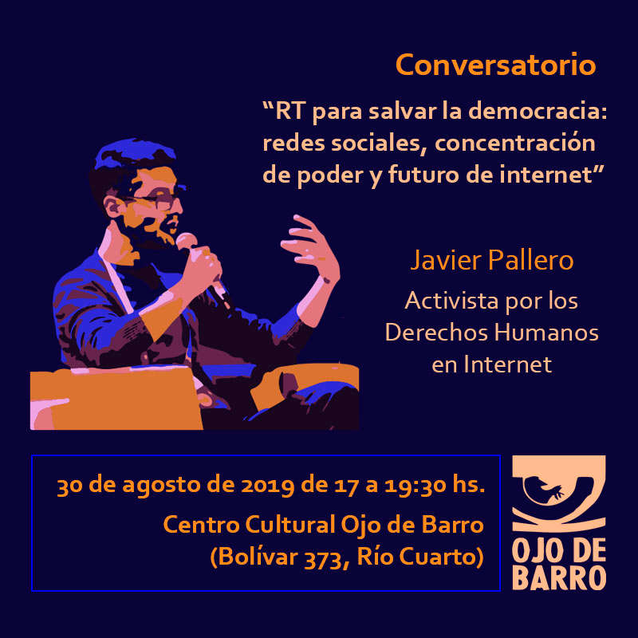

redes sociales, concentración de poder y futuro de internet

Reseña de la presentación
RT para salvar la democracia.
Redes sociales, concentración de poder y futuro de internet.
Javier Pallero. Analista de políticas públicas sobre internet Lugar: Ojo de Barro (Bolivar 373, Río Cuarto)
Fecha y horario: viernes 30 de agosto 2019, 17h